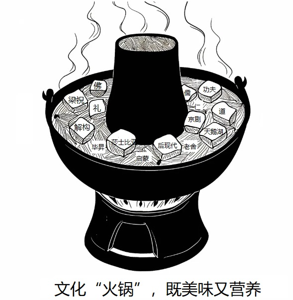

In 1924 America's National Research Council sent two engineers to supervise a series of experiments at a telephone-parts factory called the Hawthorne Plant near Chicago. It hoped they would learn how stop-floor lighting 〖1〗 workers' productivity. Instead, the studies ended 〖2〗 giving their name to the "Hawthorne effect", the extremely influential idea that the very 〖3〗 of being experimented upon changed subjects' behavior.
The idea arose because of the 〖4〗 behavior of the women in the plant. According to 〖5〗 of the experiments, their hourly output rose when lighting was increased, but also when it was dimmed. (篇幅示例，其余空格 6-20 省略...)
Of all the changes that have taken place in English-language newspapers during the past quarter-century, perhaps the most far-reaching has been the inexorable decline in the scope and seriousness of their arts coverage.
It is difficult to the point of impossibility for the average reader under the age of forty to imagine a time when high-quality arts criticism could be found in most big-city American newspapers. Yet a considerable number of the most significant collections of rhetoric criticism published in the 20th century consisted in large part of columns wrote for daily newspapers.
We are even farther removed from the unfocused intellectual climate of England in the mid-19th century, when a newspaper could think it fit to publish an 8,000-word review of an autobiography.
The story of this decline is simple enough. The daily newspaper was the medium through which intellectuals spoke to the general public; today, that communication has virtually ceased. (下略...)
One basic weakness in a conservation system based wholly on economic motives is that most members of the land community have no economic value. Yet these creatures are members of the biotic community and, if its stability depends on its integrity, they are entitled to continuance.
When one of these noneconomic categories is threatened and, if we happen to love it, we invent excuses to give it economic importance. At the beginning of the century songbirds were supposed to be disappearing. 46Scientists jumped to the rescue with some distinctly shaky evidence to the effect that insects would eat us up if birds failed to control them. The evidence had to be economic in order to be valid.
It is painful to read these roundabout accounts today. We have no land ethic yet, 47but we have at least drawn nearer the point of admitting that birds should continue as a matter of intrinsic right, regardless of the presence or absence of economic advantage to us.
You are supposed to write for the Postgraduates' Association a notice to recruit volunteers for an international conference on globalization.
The notice should include the basic qualifications for applicants and the other information which you think is relevant.
You should write about 100 words on ANSWER SHEET 2. Do not sign your own name.
Write an essay of 160-200 words based on the following drawing. In your essay, you should:
1) describe the drawing briefly,
2) explain its intended meaning, and
3) give your comments.
